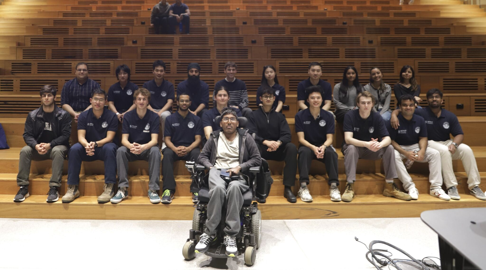

My Not A Boring Competition Journey
My journey into the Not-A-Boring Competition began much like my earlier dive into motorsport with a chance encounter on the very same road at Monash University’s Clayton campus where I first met an Monash Motorsport member all those years ago. On this particular day, I was admist contemplation about which project to take on for my Honours year when I happened to run into an old friend from my early mathematics coursework. As fate would have it, he was now the acting CEO of a newly formed group within the Civil Engineering department, known as Monash BEST. After a short conversation about my interests and what I’d been working on, he suggested I take on a preliminary design study for the entire power system of their competition model. What began as a simple scoping task quickly expanded into something far more ambitious ultimately leading to the creation of what are now the Software and Electrical departments within Monash BEST, with myself as the founding head of both divisions.

The project began with me integrating myself into the existing team, an eclectic group of aspiring engineers from a wide range of disciplines, all united by the ambition to compete on the world stage in the annual Not-A-Boring Competition. Each student brought different backgrounds, perspectives, and ideas for the direction of the machine. After a period of familiarisation with the existing design, it became clear that the system needed significant expansion and formalisation to achieve the functionality required of a competition ready tunnel boring machine. Mature TBM systems operate with 100 kW rated powertrains, complex energy management strategies, and high voltage drives and controls. In addition, because the team was newly formed, both resources and internal expertise were limited. Over the following months and in consultation with the Monash BEST executive team, industry partners, and academic supervisors I formalised the design approach, documentation standards, and technical direction. I led the transition toward a zonal ECU controls architecture centred around a high voltage DC link with distributed power electronics modules. This architecture ultimately became the foundation of the current Monash BEST vehicle now under development.
